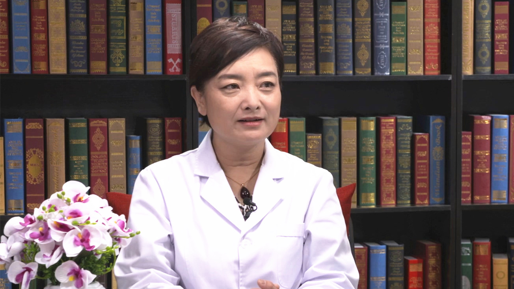

1.121 子宫内膜息肉¶
段华 主任医师¶

首都医科大学附属北京妇产医院妇科微创中心主任 主任医师 教授 博士生导师；
中华预防医学会生殖健康分会副主任委员；中国医师协会内镜医师分会副会长；中国整形美容协会科技创新与器官整复分会会长；北京医学会妇科内镜学分会主任委员；北京医学会妇产科学分会副主任委员。
主要成就： 国务院政府特殊津贴专家、首届国之名医•卓越建树专家、中央保健会诊专家、第七届首都十大健康卫士；主持多项国家级、省部级课题，研究成果获国家科技进步奖二等奖、北京医学科技奖一等奖、中华医学科技奖二等奖等。
专业特长： 擅长妇科常见病与疑难病症，如异常子宫出血、子宫肌瘤、子宫腺肌病、宫腔粘连、子宫畸形、子宫内膜异位症、卵巢肿瘤、盆腔器官脱垂与尿失禁等。尤其对各类子宫疾病、保留生育功能的微创治疗有深入研究。
子宫内膜息肉是怎么回事？¶
（采访）您跟我们介绍一下什么是子宫内膜息肉，就是在子宫内膜上长了一块肉吗？
子宫内膜息肉顾名思义是长在子宫内膜上的一种病变，平时也会听到肠道的息肉，胃的黏膜都有可能会长息肉，息肉事实上是什么？是一个赘生物，在子宫内膜的表面，老百姓说是多长了一块组织，医学上叫赘生物，形成一个息肉样的改变，或者说病变。
子宫内膜息肉也是子宫内膜或者子宫腔里边非常常见多发的病变，是一个局部的病变，特别是在年轻的生育年龄阶段的女性当中，是很多见的。
（采访）您从子宫的解剖这方面给我们讲一下，什么是子宫内膜呢？
子宫是女性身体里边非常重要的，也是和男性完全区别的一个器官。子宫的形态像什么？像一个“梨”，子宫在身体里边就像倒置的“梨”，也就是梨的下边，梨头的地方就是子宫颈，上边膨大的部分是子宫体，所以子宫是由子宫体和子宫颈来组成的。正常情况下，子宫腔是闭在一起，但是事实上子宫是有腔的，腔里边是什么？子宫内膜。子宫内膜被覆到子宫腔里边，内膜就像什么？就像地上的草一样的，这个草每个月受卵巢激素的影响，会生长，生长到一定时候会剥脱，剥脱一次就来一次月经，子宫内膜就周而复失的生长剥脱，形成月经，同时也是在行使着女性的生理功能，执行的是女性的生理功能和有别于男性的很重要的女性特征，所以子宫内膜也是子宫行使功能的很重要的一个结构，或者说是一个组织的构成，它可以周期性地生长。正常的子宫内膜像田地里的麦苗一样，长得齐刷刷的非常整齐，忽然这个地方多了几个赘生物，赘生物是什么？就是老百姓说的多长了一块肉，它的结构可能跟内膜长得差不多，但是形态不一样，大部分息肉的结构跟子宫内膜的组织结构是一样的，都是内膜、腺体和间质组成的。
子宫内膜息肉的形成可能与哪些因素有关？¶
（采访）为什么会有子宫内膜上的赘生物息肉？
为什么会长息肉，就像很多疾病一样，在医学上对于很多疾病的原因，现在还不是十分清楚，或者说不是完全明白。但是从临床上的数据或者临床表现上来看，息肉跟有些因素有高度的相关性，或者说非常关联，比如内分泌异常的病人，特别是妇科内分泌异常的病人，容易长息肉，不孕症的病人特别容易长息肉，炎症的时候也会长息肉。另外还有一类就是长期服用对子宫内膜有刺激性的药物，比如乳腺癌手术以后的病人要长期吃抑制乳腺癌的药，叫他莫昔芬，这种药对子宫内膜有很大的影响，病人内膜息肉的发生率就会非常高。
（采访）所以现在子宫内膜息肉的发病原因其实是不清楚的，只是可能跟内分泌，跟药物刺激会有一些关系？
对。而且很常见的人群，一个是在生育年龄，一个就是不孕症的病人，另外还有异常出血的病人，息肉的发生率都比较高。
子宫内膜息肉有哪些症状？¶
（采访）有子宫内膜息肉的患者会有什么症状表现吗？
息肉的症状表现主要两大类，一类可以没有症状，在做检查的时候才能发现，比如有很多不孕症的病人，自己不知道长了息肉，只不过是觉得自己怀不上孕，去医院检查一发现长了好多内膜息肉；还有一种情况是有症状，通常情况下，大多数息肉主要的改变就是月经的异常，主要表现就是月经时间长，可以沥沥拉拉，比如正常的七天就要干净，这些病人会八天、九天甚至十几天，还有一种情况是月经中期出血，比如月经都干净一周、两周了，在中间又出了几天的血，也没有其他的不舒服，疼痛、不适等等，过几天自己就好了。
有症状当然也还需要和其他的一些疾病相鉴别，不是说月经时间长了，都是长息肉，主要表现就是会有一个异常出血，但这个异常出血的量会非常少，所以经常会被患子宫内膜息肉的患者忽略，就觉得不是一个很大的事情，第一不疼痛，第二也没有特别的不舒服。当然如果息肉要合并了其他的比如炎症，盆腔的炎症，可能会有腰酸、下腹坠胀、月经量多，这是一个综合的表现，单纯息肉本身而言，主要就是月经时间的延长，另外就是不孕症的病人，往往都是没有症状，只是来查不孕症的时候才发现有息肉的存在。
子宫内膜息肉会导致不孕吗？¶
息肉的确切病因不清楚，但是息肉的生长和很多疾病是高度相关，是有关联的。比如内分泌异常，内分泌异常对于女性来说主要指的就是卵巢功能的异常。
卵巢功能异常会出现排卵功能的障碍，比如长期不排卵，特别是长期不排卵的病人，息肉的发生率也是很高的，这种情况下肯定是不会怀孕的。第二种情况就是一旦长了息肉，息肉本身对于子宫内膜，对于子宫腔也是一个影响，它毕竟是一个赘生物，是在正常子宫内膜组织上又多长了一块肉，在子宫腔子宫内膜的黏膜上，又长了一些赘生物，像小蘑菇一样的，一个一个。
目前的研究认为息肉会影响和破坏子宫腔内环境，正常在受精卵植入的时候，也就是精子、卵子相遇进入到子宫腔，因为子宫腔是孕育宝宝很重要的场所，受精卵进到子宫腔，要在这里生长，要在这里发育，要十个月的时间，所以一定要有正常的环境，长了息肉以后无疑会把这个环境给破坏了，同时息肉本身也能够分泌一些细胞因子，分泌一些炎症物质，就会破坏内环境，就像在田地里边，本来种庄稼长得很好，现在又长了一些息肉，就像来了一些害虫一样，它会破坏这样的环境，有可能就会影响到受精卵的植入，包括植入以后的正常发育，有一部分的息肉病人都是以不孕症的形式表现出来的。
是不是息肉都必须要切了以后才能怀孕，也不全是，要看息肉的形态、大小，有一些比较大的息肉肯定是有影响的，现在有大量的研究证实，是需要治疗的。
如何诊断子宫内膜息肉？应与哪些疾病区分开？¶
（采访）子宫内膜息肉主要一个就是会有不孕症，还有一个就是月经周期会长，可能会到8-10天，或者10天以上。患者说我月经来了十多天，会不会就是子宫内膜息肉，那又没有别的病，我要进行注意，我区分一下？
这就是临床医学的复杂性，这里不能拿一个症状就去针对一个病，异常出血是一个症状，很多疾病都会有异常出血的表现，息肉只是其中之一，这个就需要到医院去进行检查。医生要根据病史、病人叙述的情况，比如月经长时间沥沥拉拉不干净、中期又出血了、好几年都不怀孕、异常的分泌物、血性的白带等，让病人去做相应的检查，比如妇科检查，要排除其他器质性的病变，同时还要经过影像学，也就是B超，还要做一些必要的检查，最后大夫才能够确诊有没有息肉。另外对于异常出血还要看宫腔，比如现在的宫腔镜检查，是一个侵入性非常小的检查，就像做胃镜、肠镜一样，做一个宫腔镜，拿一个镜子插到子宫腔里看一看，息肉是赘生组织，所以它是异常增生的物质，做内镜检查宫腔镜的时候是很容易发现和明确息肉的存在。
当有症状的时候，不要去猜想自己就是长了息肉，也不一定。其他有很多疾病，比如子宫肌瘤、子宫腔内的一些病变，像功能失调等都有可能，包括子宫内膜炎症等都可能引起月经时间长，所以不一定月经时间长就是息肉，一定要到医院去让医生做诊断。
（采访）您也讲到了去医院会做妇科检查，也会有影像学像B超这样的检查，也会做宫腔镜内镜的检查，是不是去了医院这些都要做？
也不一定，要看医生怎么样做诊断，主要就是根据病史，还有这个病对生活的影响，比如对生活很有影响，每个月都不干净这么长时间，或者有些病人说是希望要生育的，已经想着怀孕，两年都没有怀上了，看病人的情况，医生会让病人做一些选择性的检查，并不是拉网式的检查，有一些检查可能做了以后，能够明确诊断，就不一定需要再去做其他的检查。在医院里边各种检查有很多种，不是所有人都要全部的检查都来一遍，根据病人主要的痛苦，也就是病人主诉，看哪些检查能够达到医生的诊断，能够达到对疾病的了解，医生在做诊断的时候不是只听病人说，是有一些必要的检查和辅助检查，为了佐证病人说的和医生做的初步诊断吻合上，最后才能够对疾病下确切的诊断。
功能性和非功能性子宫内膜息肉是怎么回事？¶
子宫内膜息肉说到起源，是一个赘生物赘生到子宫内膜上的，息肉长出来以后，从组织学上，肉眼看不到的，统称都叫息肉。但是息肉有不同的表现，有的息肉是功能性息肉，有些息肉是非功能息肉，所谓的功能性息肉和非功能性息肉，只是临床上用来鉴别息肉的一种称呼，或者是一个分类。
功能性息肉是什么？就是有功能的，子宫内膜每个月是受卵巢激素的影响，有一个周期性地生长，还会剥脱，功能性的息肉会随着子宫内膜的剥脱而剥脱掉，每个月来月经，在快来月经的时候做B超或者查体，说子宫腔里有息肉，但是来完月经以后就没有了，再去复查也没有了。这一类息肉是会随着月经剥脱的，通常没有症状，有些病人去查体发现子宫腔里有息肉，或者说经常超声，会给你提示异常回声，有一个高回声团块，不要紧张，只要月经是很正常的。还有一类息肉叫非功能性息肉，非功能性息肉是不能够随着月经周期的剥脱而剥脱的，来完月经它还在，刚刚来完月经三天以后去查看息肉，去查看B超宫腔里还有一个团状的回声，或者说还提示有异常回声，或者息肉样的回声，这个就得做进一步的检查，包括可能的一些治疗。
在月经干净以后去观察息肉，也是临床医生在处理这一类病人当中很常做的方法，有些病人可能不理解，认为刚做完B超，怎么月经干净了又来做B超，这个时候主要就是看内膜，因为它有周期性的生长，在卵巢激素的作用下，会周期性地生长、剥脱，生长到一定程度的时候，就会剥脱，周而复始，形成月经，内膜剥脱就形成月经，月经来了以后，相当于子宫内膜就做了一次大清理，这个时候宫腔就非常光滑，内膜非常薄，在做B超的时候，内膜就是一条线。但是如果来完月经以后，子宫内膜清理的不彻底，内膜还会很厚，会回声不均匀，这就提示内膜没有完全剥脱或者没有完全被清除，就可能会有息肉的存在，剥不下去。当然还可能有其他的原因，就要进一步的检查，医生可能就会建议再做一个内镜检查，比如宫腔镜，宫腔镜能够看得很清楚，这是一个形态学的改变，就是长东西了，子宫内膜上多了一个或者好几个，因为息肉可以单发，也可以多发，那就是多发的内膜息肉，这个时候就要通过宫腔镜，同时进行全面的观察和诊断。
（采访）所以子宫内膜息肉它分为功能性和非功能性，这个功能性它可以随着月经周期，它可以自己剥脱，就随着月经排掉了，也会建议这个患者在月经干净三天之后，来医院再做一个B超，如果这个B超还是提示他可能回声异常，或者有团状的这种回声的话，就会再进一步的做一个比如说宫腔镜的内镜检查？
对，功能性和非功能性息肉不是靠肉眼去观察的，肉眼看不出来，分类都是组织学上的区分，组织学区分是什么？是要把局部的组织取一块，拿出来做病理，肉眼都不是最后的确诊诊断，病理才是最后的确诊诊断，只有病理才能够鉴别功能性、非功能性。
功能性和非功能性子宫内膜息肉有哪些不同？¶
功能性和非功能性息肉的病因是不一样的，功能性息肉很多是跟内分泌状态相关联，比如有内分泌的异常，经常不排卵、月经稀发，可能内膜就会增厚，就会有息肉，但是功能性息肉不是所有的功能性息肉每个月都到点都能排出去，也有一些功能性息肉是排不出去的，在临床上没有绝对之分，也不是所有的非功能性息肉都要去做治疗，有些非功能性息肉没有症状，但是相对来说功能性和非功能性区分，不是靠医生肉眼一看就是，是要根据组织学。
功能性息肉虽然是切了息肉，医院里会出一个病理，增殖期子宫内膜，不会给你报息肉的，但是在做形态学诊断的时候，医生看宫腔镜，看宫腔，只是多长了一块组织，就是像蘑菇头一样的，或者小蘑菇大小的，可以大可以小，每个人是不一样的，就是有赘生的组织，但是不一定病理都报是一个息肉，经常病人会不理解，说不是诊断是息肉吗，怎么切下来就没有息肉了？很有可能，切下来病理报的就是增殖期的内膜。
非功能性息肉，比如炎性息肉，都是炎症刺激引起的，往往都是非功能性的，一般不会随着月经剥脱，这种息肉通常会长在子宫颈管里，宫颈的息肉，老百姓认为都是子宫腔里边，因为宫颈和宫腔本来就在一体，老百姓不可能区分什么叫宫颈的息肉，什么叫宫腔的息肉，是看不出来的，统称都叫子宫内膜里的息肉。还有一部分非功能性息肉，像腺肌瘤样息肉，这就是比较专业的一个分型了，就像同样一个事情可以分出不同的类别一样，对老百姓来说就是一个赘生物，知道它是赘生物就行了。腺肌瘤样息肉通常是在老年人，比如绝经以后，宫腔里会长很大一个赘生物，老年人经常还可能没有症状，但是去查体，可能偶尔有一次出血去检查了，就会发现宫腔内长了很大的赘生物，这也是息肉，叫腺肌瘤样的息肉。
所以息肉也有很多种类的区分，这个种类的区分不是老百姓能够区分开的，或者医生看一眼B超就能知道，这个是不会知道的。但是有一点就是不管哪一类型的息肉，都要听医生的建议，看看大夫怎么跟你说，是需要治疗，还是需要观察，还是需要立马就进行手术，这个通常不是自己决定的，病人自己是决定不了的，一定要听大夫的意见和建议。
做宫腔镜检查时发现子宫内膜息肉，可以直接手术切除吗？¶
（采访）子宫内膜息肉在做宫腔镜检查的时候，有没有可能直接就把息肉给治疗了，切除了呢？
不太建议这么做，临床诊疗从老百姓的角度，是希望一检查了马上就拿走，但是通常情况下是不建议这么做。有些人说她就很小一个息肉，刮一下刚好能刮掉，那就是碰巧了，如果长了很多多发的息肉，刮宫经常是刮不干净的，刮息肉是一个盲目的操作，大夫知道在里边刮的，但是并没有直接去看，不能够直接去看，那说宫腔镜直接给切了，宫腔镜是需要打麻醉的。如果大夫只是知道有出血，病人没有息肉，给打一个麻醉上手术台，对病人来说也是一个不必要的创伤，大夫都不知道里边是单个的还是多个的，也不知道为什么长息肉，这个时候直接做手术，通常是不建议的。
第一，诊断和手术相比，诊断的侵入性更小，对于内膜息肉，长的部位比较特殊，特殊在都看不见，如果要是长在手上，长在脸上都能看得见，那肯定直接就切除了，直接拿去送病理，但是长在子宫腔里边，不知道有没有。第二，子宫腔里边不管是检查也好，手术也好，都是叫侵入性，什么叫侵入性？或多或少是有创伤的，诊断不能够说随便在家里做，也不能在诊室里边就做了，这是需要无菌的环境，必须是进手术室。
正常情况下宫颈是一个非常狭窄的孔道，在非妊娠状态，不怀孕的时候，宫颈是非常坚硬的，宫颈为什么要这么坚硬？因为是一种防御，外界的细菌和病原体进入子宫腔的一个很重要的门户，就像大门一样，它是紧紧关闭着的，就是为了预防外界的病原体进入到女性体内，女性的盆腔有很重要的一个解剖前提，或者是解剖结构的特殊性，女性的盆腔就是肚子，女人的肚子跟外界是相通的，这点跟男性是不一样的。所以为什么女性经常会有盆腔炎症、感染，粘连等问题，就是因为病原体会通过生殖道进入到盆腹腔，也就是进入到肚子里。所以在做这种操作的时候，是要把宫颈扩张开的，否则也看不了，进去以后如果没有长息肉，或者是其他因素引起的出血，直接都给它扩开，又拿治疗镜进去，对病人也是一种创伤，做诊断的镜子非常纤细，只有三四个毫米，这个镜子要轻轻地进去以后看看，有息肉，就会让病人打一个麻醉，打了麻醉以后全面的去观察，息肉就要按照切息肉的标准和要求，临床诊疗和操作都是有标准的，要做一个全面彻底的手术，而不是用这么细的镜子一看，有息肉，我给你刮刮吧，这种治疗是不彻底的，所以是不建议病人一看就是一个息肉，就赶紧切了算了，这种理念是不对的。
现在临床当中也在提倡什么？提倡精准治疗，就是尽可能在治疗疾病的时候，减少对旁边正常组织的损伤，所以检查跟手术这是两个步骤，或者说是两个不同的过程。这里还是特别希望病人能够相信大夫，一定按照大夫的要求，或者大夫给的建议，该干什么干什么，不要自己太有主张，手术都是有指征的，大夫也不能够说我想给你做就做，也要根据指征，就是手术的适应证、理由，为什么要做。大夫在病人住院的时候要写一本病历，这本病历都会很清楚的写诊断是什么？还有一个诊断依据，就是大夫为什么诊断？比如息肉，为什么诊断是息肉，就要写上很多的理由，从病史的角度，从检查的结果怎么去发现的，影像学、B超怎么说的，宫腔镜怎么说，要根据这些理由才能有诊断，有了诊断以后，治疗的方案也要提，诊断完了以后鉴别诊断还要鉴别，会不会有其他因素，都要一一的排除，然后才能够说治疗方案，所以这里提醒病人，在临床当中一定要按大夫说的去做，而不要自己想干什么就干什么，这样做只能对自己不好。
（采访）宫腔镜的检查，是一个很细的一个镜子，对病人不会有很大的创伤或者很大的疼痛感，然后做完宫腔镜要看清楚到底是不是息肉，是单个的还是多个的，适不适合做手术，还要医生全面的来评估？
是的。不光是对息肉，对所有的子宫腔内的病变都是这样的步骤，这是诊疗流程。
子宫内膜息肉可以药物治疗吗？¶
（采访）会不会有的患者说我就不想做手术，或者她的身体状况不适合做手术，子宫内膜息肉能不能药物治疗？
治疗方案应该是由大夫来决定，既然去看了医生，就应该相信医生，而不是自己给自己提治疗方案，这是一个大的前提。
对于息肉的治疗，可以有手术，也可以不做手术，手术主要针对息肉体积比较大的，经过月经又不能够让它消失的，或者有很长时间的症状，比如有异常出血、不孕症，这个有可能是要考虑去做手术的治疗，但是也有一些病人，症状不明显的，或者以前查体也没有发现有这种情况的，或者经过检查认为是功能性息肉的可能性比较大的，可以不做手术。
不做手术那就是用药物，让它剥脱，通常用的都是孕激素，孕激素在月经的后半期，就是帮助子宫内膜剥脱一次，让它脱掉，但是通常药物治疗是不能够直接确定就可以使用的，药物治疗是一个保守治疗，用两个周期到三个周期的药，通常至少要用2-3个月，每个月会要让你用一段时间的药，再来观察看看能不能剥脱，看看症状能不能消失，比如说做个B超，看看内膜是不是很光滑了，这个才可以。所以药物治疗是一种选择，不是对所有的病人都适合，治疗以后是需要做复查的，就看症状能不能改善，如果不能，可能还得后续的治疗。
子宫内膜息肉治疗后会复发吗？¶
（采访）子宫内膜的息肉治疗之后，还会不会再复发？
会的。子宫内膜息肉是一个复发率很高的疾病，息肉是长在内膜上的，而内膜每个月都可以长出来，剥下去，这个月的内膜长了出来，长息肉了剥脱了，下个月长出来还有可能长息肉，而且现在长在比如左侧宫角的部位，下次也可以长在右侧宫角，就是整个子宫内膜里边哪个部位都可能长。
对于息肉，还要考虑一些因素，就是要大概知道它是怎么来的，比如内分泌引起的，治疗息肉就不是主要目的，是要做内分泌的治疗，要调理月经，比如促进排卵，就要看内分泌是怎么异常的，需要怎么样的一个调理。还有一些息肉，和其他的病相关，比如子宫内膜异位症，这类病人息肉的发生率是很高的，高达50%，甚至到60%的病人，都可能同时合并子宫内膜息肉，是另外的疾病联带上这个病，所以仅仅做一个息肉切除是不够的，因为原病因没有祛除，有可能到下个月又起来了，或者好多病人说去年刚做完息肉，怎么今年又长了息肉，这太可能了，病人不要觉得很惊异，说大夫没给我做好，不是的，后来又长了就要好好去查一下为什么重复长息肉，原因是什么。
这个原因一定要求助大夫，而不是自己就能想出来的，大夫要根据情况，包括息肉切下来的组织学类型，根据相关的辅助检查，去考虑可能是哪方面的因素。对于息肉的治疗，不单纯的去观察B超，看长没长息肉，这是不够的，因为它是一个可复发的，几率很高的疾病。
（采访）所以就是手术切除了息肉的患者，其实他也是要吃一段时间的药来治疗一下，调理一下内分泌，才能防止说下一次再长出息肉？
对，是的。
子宫内膜息肉切除后多久可以怀孕？¶
（采访）做了子宫内膜息肉切除的患者，她一般多久能恢复？她多久能怀孕？
息肉对于手术是一个小手术，它就是长在内膜上的赘生物，手术的目的就是把多长的组织给切了，就是一个小的操作。而通常对息肉的治疗，特别是对于没有生育的年轻女性，是要求息肉只切到子宫内膜的功能层，就是不损伤正常的肌层组织。息肉做完以后，通常有2-3次月经，也就是2-3次内膜的剥脱，切息肉局部的地方就已经完全好了，一般来说2-3个月经周期之后就可以了，想怀孕就可以去试怀孕。切完息肉以后，看看症状能不能改善，就异常出血，不能说这个月刚切完息肉就去观察，至少下个月才开始，就看看月经，上个月比如10天、15天，这个月看看是不是还是这样，如果切了息肉还是这样，可能就要考虑有其他的原因，还要做进一步的检查。
子宫内膜息肉术后如何进行随访复查？¶
（采访）患者做了手术，切除了子宫内膜息肉她需要多久来复查一次？
它是复发率很高的局部病变，复查肯定是需要了解切除以后的效果，息肉切完了以后，内膜的修复是需要过程的，通常需要2-3个月经周期。所以就说在这2-3个月经周期里边，通常手术的第一个月，也就第一次月经要到医院复查一次，之后就是三个月，三个月期间就要观察月经是不是正常了，原来异常出血，现在是不是好了，原来异常排液，是不是好了，如果对于急着怀孕的病人，还会在这三个月做一些受孕之前的准备，比如原来她是不孕症，还会让病人测测基础体温，看看BBT就是基础体温的表，看看是不是有正常的排卵，因为多发息肉是跟内分泌状态有关联，看看是不是排卵有障碍，三个月以后要来要告诉医生，在这三个月当中都观察了什么，发现了什么，做了手术跟做手术之前有什么不一样？这是一定要复查的，否则三个月以后的效果，做了手术治疗以后好了还是没好了，大夫也不会知道。
（采访）所以手术完一个月是需要复查一次，然后三个月之内，患者需要自己观察一些基本的情况。
子宫内膜息肉会癌变吗？¶
息肉是有癌变几率的，特别是在老年妇女，比如绝经以后宫腔里又长东西了，就要高度警惕有癌变的可能，如果息肉同时伴随不典型的增生，在往癌症方向去发展，这种情况仅仅切个息肉是不够的，不能只考虑切一个息肉，需要根据病变的范围程度，还有病人的年龄，进行全面评估。比如病人已经50多岁了，对于妇科病人来说，本身就是高发妇科肿瘤的年龄段，同时又有很长时间的异常出血，有息肉已经有癌变的，或者说已经癌变了，这个时候肯定要考虑子宫切除了。
还要根据之前评估的情况，有时候仅仅切除子宫都是不够的，还要切除双侧的附件，也就是输卵管、卵巢，甚至还可能比如息肉恶变，或者直接就导致了内膜癌，可能切一个输卵管、卵巢都不够，子宫，输卵管，卵巢，包括腹膜后的淋巴结，就要按恶性肿瘤的手术模式和治疗原则去进行，这个时候就不能够叫息肉的治疗了，而是子宫恶性肿瘤的治疗。
子宫内膜息肉会遗传吗？¶
（采访）有的妈妈可能会担心我有子宫内膜息肉，会不会我的女儿也会得这个呢？
目前没有研究认为妈妈有息肉一定会传给孩子，息肉的原因有很多层面，具体到底是哪一种原因，现在还没有特别确切，或者说发病机制并不是已经完全明了了，很多发病机制是不明了的，妈妈会不会一定传给孩子，目前没有这样的研究说一定有相关性，但是整体来说息肉是女性，特别是生育年龄和围绝经期，也就是生育年龄段到绝经以前50岁这个年龄段，非常高发和常见的疾病。
所以不用担心，有症状及时去治疗，没有症状说明息肉能够随着月经剥脱，即使前边没查出来也不用紧张，作为病人要关注的主要是自身症状，自己异常的表现，比如以往月经都是30天、28天来一次，来3天就干净了，现在28天来一次，但是中间沥沥拉拉不干净，能沥拉到十几天，或者说干净一周又开始有点血性分泌物，这个时候就是跟之前不一样了，就得关注治疗，而不是去想息肉是不是孩子也有，孩子有和没有，取决于她本身有没有症状，有表现就及时去看病去治疗，而不是去担心，在临床上任何担心都是没有用的，只能去面对现实，所以目前还不知道是不是妈妈得了孩子一定得，或者说妈妈得，孩子得的风险也高，没有这样的研究来证实。
（采访）所以现在也是没有明确说子宫内膜息肉会有遗传的说法？
是的。
子宫内膜息肉能预防吗？¶
（采访）子宫内膜息肉可以预防吗？
通常内膜息肉是没有办法预防，或者说没有专门针对息肉的方案，比如现在好好的，查体也没事，为了预防息肉吃点药，通常没有这样的治疗方案。现在临床的治疗都是因症治疗，比如有症状，不舒服，某一个表现是异常的，跟之前正常的生活的模式或者正常的状态不一样，你才求助医生治疗。如果都好好的，月经都很规律，不会想吃点药长期去预防。
但是对于有一些病人是要高度预防息肉的。息肉的原因当中，一种是在长期吃药，对子宫内膜有刺激的药，比如乳腺癌，做了手术以后，乳腺科的大夫让长期吃预防复发的药，比如他莫昔芬，可能是对子宫内膜有影响的，这个影响就有可能让子宫内膜长息肉，对这样的病人要重点监控，所谓重点监控是病人自己也得知道自己息肉的发生率很高，所以病人不只是看乳腺，还要定期到妇产科，看看这个药吃一段时间，对内膜有没有影响，如果有影响，可能大夫会适当的干预，包括药物和一些必要的处理措施，来预防息肉的发生，长期使用这个药息肉的发生率是很高的。
还有一些病人就是子宫内膜异位症，这是终身性的疾病，它长息肉的风险也是很高的，而且在百分之五六十的病人可能都同时合并有子宫内膜息肉，对这一类病人，预防不是预防息肉，而是做源头治疗，也就是病因治疗，子宫内膜异位症的治疗，本身就需要终身管理，也就是终身去治疗的疾病，在没有绝经之前，一直都需要医生来进行控制，这个过程也是在预防，或者老百姓认为源头治疗了，肯定原发病都治了，息肉是原发病引起的，息肉不就是也预防了吗？